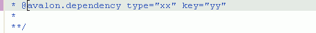
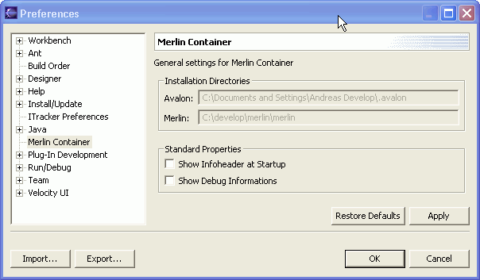

Context sensitiv help for @avalon tags
If you enter a @ into an existing JavaDoc area, you will get a context sensitive help with all possible avalon JavaDoc tags.

Selecting a help will insert a template tag like shown below.

Preference page for installation directories
